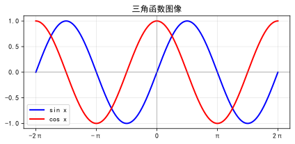
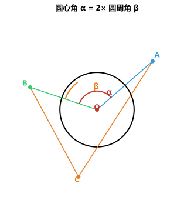
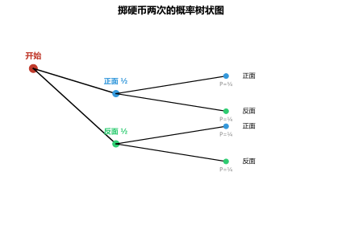

📐 中考数学知识点大全
数与式 · 方程与不等式 · 函数 · 几何 · 统计与概率 · 数学思想 · 应用模型 · 中考全覆盖
一、数与式
🔹 实数
分类：按定义分有理数（整数、分数）和无理数（无限不循环小数如 π、√2、√3、0.101001…）。按正负分正数、零、负数。
数轴：规定了原点、正方向和单位长度的直线。实数与数轴上的点一一对应。
相反数：只有符号不同的两个数互为相反数。0 的相反数是 0。a+b=0 ⇔ a、b 互为相反数。
绝对值：|a|≥0；|a|=a（a≥0），|a|=-a（a<0）。
科学记数法：a×10ⁿ（1≤|a|<10）。 大数 n=整数位数-1 小数 n=第一个非零数前零的个数的相反数
比大小：数轴比较法、差值法、平方法、中间量法。
常见无理数估算：√2≈1.414 √3≈1.732 √5≈2.236 π≈3.1416 √10≈3.162
数轴：规定了原点、正方向和单位长度的直线。实数与数轴上的点一一对应。
相反数：只有符号不同的两个数互为相反数。0 的相反数是 0。a+b=0 ⇔ a、b 互为相反数。
绝对值：|a|≥0；|a|=a（a≥0），|a|=-a（a<0）。
科学记数法：a×10ⁿ（1≤|a|<10）。 大数 n=整数位数-1 小数 n=第一个非零数前零的个数的相反数
比大小：数轴比较法、差值法、平方法、中间量法。
常见无理数估算：√2≈1.414 √3≈1.732 √5≈2.236 π≈3.1416 √10≈3.162
🔹 实数的运算
运算律：加法交换律 a+b=b+a；加法结合律 (a+b)+c=a+(b+c)；乘法分配律 a(b+c)=ab+ac。
乘方与开方：aⁿ 表示 n 个 a 相乘。a² 的平方根为 ±√a（a≥0），算术平方根为 √a（a≥0）。立方根 ∛a。
混合运算顺序：先乘方开方，再乘除，后加减；有括号先算括号内。
乘方与开方：aⁿ 表示 n 个 a 相乘。a² 的平方根为 ±√a（a≥0），算术平方根为 √a（a≥0）。立方根 ∛a。
混合运算顺序：先乘方开方，再乘除，后加减；有括号先算括号内。
🔹 整式与因式分解
整式运算：合并同类项（系数相加，字母及指数不变）；去括号法则（括号前是"+"不变号，是"﹣"全变号）。
幂的运算法则：aᵐ·aⁿ=aᵐ⁺ⁿ aᵐ÷aⁿ=aᵐ⁻ⁿ (aᵐ)ⁿ=aᵐⁿ (ab)ⁿ=aⁿbⁿ a⁰=1(a≠0) a⁻ⁿ=1/aⁿ
乘法公式：
幂的运算法则：aᵐ·aⁿ=aᵐ⁺ⁿ aᵐ÷aⁿ=aᵐ⁻ⁿ (aᵐ)ⁿ=aᵐⁿ (ab)ⁿ=aⁿbⁿ a⁰=1(a≠0) a⁻ⁿ=1/aⁿ
乘法公式：
(a+b)(a-b)=a²-b² | (a±b)²=a²±2ab+b² | (a±b)(a²∓ab+b²)=a³±b³
因式分解步骤：一提公因式 → 二用公式 → 三十字相乘/分组
十字相乘：x²+(p+q)x+pq=(x+p)(x+q)
十字相乘：x²+(p+q)x+pq=(x+p)(x+q)
🔹 分式与二次根式
分式：分母含字母的式子。分母≠0 时有意义。分式值为0 ⇔ 分子=0 且分母≠0。
二次根式性质：(√a)²=a（a≥0）；√a²=|a|；√(ab)=√a·√b（a,b≥0）；√(a/b)=√a/√b（a≥0,b>0）。
最简二次根式：被开方数不含分母、不含开得尽方的因数因式。
分母有理化：1/√a=√a/a 1/(√a+√b)=(√a-√b)/(a-b)
二次根式性质：(√a)²=a（a≥0）；√a²=|a|；√(ab)=√a·√b（a,b≥0）；√(a/b)=√a/√b（a≥0,b>0）。
最简二次根式：被开方数不含分母、不含开得尽方的因数因式。
分母有理化：1/√a=√a/a 1/(√a+√b)=(√a-√b)/(a-b)
例题 1：计算 |√3-2| + (π-3.14)⁰ - √9 + (-½)⁻²
分析：绝对值、零指数、算术平方根、负整数指数幂的综合运算。
分析：绝对值、零指数、算术平方根、负整数指数幂的综合运算。
|√3-2| = 2-√3（因为√3≈1.732<2）；(π-3.14)⁰=1；√9=3；(-½)⁻²=4。原式 = (2-√3)+1-3+4 = 4-√3
例题 2：分解因式：① x³-4x ② x²-2x-15 ③ a²-b²+2a+1
分析：先提公因式，再用公式；十字相乘；分组分解。
分析：先提公因式，再用公式；十字相乘；分组分解。
① x³-4x = x(x²-4) = x(x+2)(x-2)
② x²-2x-15 = (x-5)(x+3)
③ a²-b²+2a+1 = (a²+2a+1)-b² = (a+1)²-b² = (a+1+b)(a+1-b)
② x²-2x-15 = (x-5)(x+3)
③ a²-b²+2a+1 = (a²+2a+1)-b² = (a+1)²-b² = (a+1+b)(a+1-b)
练习 1：计算 √12 + |√3-2| + (½)⁻¹ - (π-2024)⁰
√12=2√3；|√3-2|=2-√3；(½)⁻¹=2；(π-2024)⁰=1。原式 = 2√3+(2-√3)+2-1 = √3+3
练习 2：当 x 为何值时，分式 (x²-4)/(x-2) 的值为 0？
分子=0 ⇒ x²-4=0 ⇒ x=±2；分母≠0 ⇒ x≠2。所以 x=-2 时分式值为0。
二、方程与不等式
🔹 一元一次方程
形式 ax+b=0（a≠0），解 x=-b/a。
解法步骤：去分母→去括号→移项→合并同类项→系数化为1
去分母每一项都要乘最小公倍数；移项要变号
应用题六步：审题→设未知数→列方程→解方程→检验→作答。
解法步骤：去分母→去括号→移项→合并同类项→系数化为1
去分母每一项都要乘最小公倍数；移项要变号
应用题六步：审题→设未知数→列方程→解方程→检验→作答。
🔹 二元一次方程组
代入消元法：将一式变形成 y=... 代入另一式。
加减消元法：两式加减消去一个未知数。
三元一次方程组：逐步消元，先化为二元一次方程组。
加减消元法：两式加减消去一个未知数。
三元一次方程组：逐步消元，先化为二元一次方程组。
🔹 分式方程
去分母（乘最简公分母）化为整式方程。必验根：使最简公分母=0 的根为增根，舍去。
🔹 一元二次方程
一般形式 ax²+bx+c=0（a≠0）。
解法：直接开平方 配方法 公式法 因式分解法
解法：直接开平方 配方法 公式法 因式分解法
x = [-b ± √(b²-4ac)] / (2a) | Δ = b²-4ac
判别式：Δ>0 两个不等实根 Δ=0 两个相等实根 Δ<0 无实根
韦达定理：x₁+x₂=-b/a，x₁x₂=c/a（Δ≥0 时适用）。
韦达定理：x₁+x₂=-b/a，x₁x₂=c/a（Δ≥0 时适用）。
🔹 不等式（组）
基本性质：加减同一数不等号方向不变；乘除正数方向不变；乘除负数方向改变。
解集在数轴表示：≥或≤用实心点，>或<用空心圈。
口诀：同大取大、同小取小、大小小大中间找、大大小小无解
解集在数轴表示：≥或≤用实心点，>或<用空心圈。
口诀：同大取大、同小取小、大小小大中间找、大大小小无解

例题 3：解方程 x²-5x+6=0
分析：可用十字相乘因式分解。
分析：可用十字相乘因式分解。
x²-5x+6 = (x-2)(x-3)=0，所以 x₁=2，x₂=3。也可用公式法验证：Δ=25-24=1，x=(5±1)/2。
例题 4：关于 x 的方程 x²-2x+m=0 有实数根，求 m 的取值范围。
分析：判别式 Δ≥0 时有实数根。
分析：判别式 Δ≥0 时有实数根。
Δ = (-2)²-4×1×m = 4-4m ≥ 0 ⇒ m ≤ 1。注意：一元二次方程有实数根时 Δ≥0，而非 Δ>0。
练习 3：解不等式组 { 2x-1>5, 3x+2≤8 }
2x-1>5 ⇒ x>3；3x+2≤8 ⇒ x≤2。无交集 ⇒ 无解（大大小小无解）
练习 4：已知 x₁、x₂ 是方程 x²-3x+1=0 的两根，求 x₁²+x₂² 的值。
韦达定理：x₁+x₂=3，x₁x₂=1。x₁²+x₂² = (x₁+x₂)²-2x₁x₂ = 9-2 = 7
三、函数
🔹 平面直角坐标系
象限符号：一(+,+) 二(-,+) 三(-,-) 四(+,-)
对称规律：关于x轴(x,y)→(x,-y) 关于y轴(x,y)→(-x,y) 关于原点(x,y)→(-x,-y)
两点间距离 d=√[(x₁-x₂)²+(y₁-y₂)²]，中点坐标((x₁+x₂)/2, (y₁+y₂)/2)。
对称规律：关于x轴(x,y)→(x,-y) 关于y轴(x,y)→(-x,y) 关于原点(x,y)→(-x,-y)
两点间距离 d=√[(x₁-x₂)²+(y₁-y₂)²]，中点坐标((x₁+x₂)/2, (y₁+y₂)/2)。

🔹 一次函数 y=kx+b（k≠0）
k>0
过一、三象限，y 随 x 增大而增大（↗）
k<0
过二、四象限，y 随 x 增大而减小（↘）
b>0
与 y 轴正半轴相交
b<0
与 y 轴负半轴相交

🔹 反比例函数 y=k/x（k≠0）
图象是双曲线，与坐标轴无交点。|k|的几何意义：过双曲线上任一点作 x、y 轴垂线，矩形面积为 |k|。
易错：必须强调"在每个象限内"
k>0
一、三象限，每个象限内 y 随 x 增大而减小
k<0
二、四象限，每个象限内 y 随 x 增大而增大

🔹 二次函数 y=ax²+bx+c（a≠0）
三种形式：一般式 y=ax²+bx+c；顶点式 y=a(x-h)²+k；交点式 y=a(x-x₁)(x-x₂)。
对称轴：x=-b/(2a)。顶点坐标 (-b/(2a), (4ac-b²)/(4a))。
与 y 轴交点：(0,c)。与 x 轴交点：Δ>0 两个交点；Δ=0 一个交点；Δ<0 无交点。
平移：y=ax² → 左加右减 → y=a(x-h)² → 上加下减 → y=a(x-h)²+k
对称轴：x=-b/(2a)。顶点坐标 (-b/(2a), (4ac-b²)/(4a))。
a>0
开口向上，有最小值
a<0
开口向下，有最大值
|a|越大
开口越小
平移：y=ax² → 左加右减 → y=a(x-h)² → 上加下减 → y=a(x-h)²+k
🔹 函数图像变换

🔹 锐角三角函数
sinA=对边/斜边 cosA=邻边/斜边 tanA=对边/邻边
| 角度 | 30° | 45° | 60° |
|---|---|---|---|
| sin | ½ | √2/2 | √3/2 |
| cos | √3/2 | √2/2 | ½ |
| tan | √3/3 | 1 | √3 |

例题 5：一次函数 y=2x+b 过点 (1,3)，求 b 的值及与 x 轴的交点坐标。
分析：代入点求 b，令 y=0 求与 x 轴交点。
分析：代入点求 b，令 y=0 求与 x 轴交点。
代入 (1,3)：3=2×1+b ⇒ b=1，解析式为 y=2x+1。令 y=0：0=2x+1 ⇒ x=-½，与 x 轴交点为 (-½,0)。
例题 6：二次函数 y=-x²+2x+3 的顶点坐标和最值是什么？
分析：配方或用顶点公式。
分析：配方或用顶点公式。
y = -x²+2x+3 = -(x²-2x)+3 = -(x-1)²+4。顶点 (1,4)，a=-1<0 开口向下，有最大值 4。
练习 5：已知反比例函数 y=k/x 过点 (2,-3)，求 k 的值，并判断图象所在象限。
代入 (2,-3)：-3=k/2 ⇒ k=-6。k<0 ⇒ 图象在二、四象限。
练习 6：计算 sin30° + cos60° - tan45° 的值。
sin30°=½，cos60°=½，tan45°=1。原式=½+½-1=0
四、几何
🔹 线与角
平行线性质与判定：同位角相等⇔两直线平行；内错角相等⇔两直线平行；同旁内角互补⇔两直线平行。
垂线：过一点有且只有一条直线与已知直线垂直。垂线段最短。
角平分线：角平分线上的点到角两边距离相等。到角两边距离相等的点在角平分线上。
垂线：过一点有且只有一条直线与已知直线垂直。垂线段最短。
角平分线：角平分线上的点到角两边距离相等。到角两边距离相等的点在角平分线上。
🔹 三角形
内角和：180°。外角等于不相邻两内角和。三边关系：任意两边之和>第三边。
重要线段：中线等分面积，重心(2:1) 高线垂心 角平分线内心 中位线平行等于第三边一半
等腰三角形：等边对等角、三线合一。
等边三角形：三边相等、三角60°。
直角三角形：勾股定理 a²+b²=c²；30°角对边=斜边一半；斜边中线=斜边一半。
重要线段：中线等分面积，重心(2:1) 高线垂心 角平分线内心 中位线平行等于第三边一半
等腰三角形：等边对等角、三线合一。
等边三角形：三边相等、三角60°。
直角三角形：勾股定理 a²+b²=c²；30°角对边=斜边一半；斜边中线=斜边一半。
全等判定：SSS、SAS、ASA、AAS、HL（Rt△）。倍长中线、截长补短、旋转是常用辅助线。
相似判定：两角对应相等AA 两边成比例且夹角相等SAS 三边成比例SSS
相似性质：面积比=相似比的平方。A字型与8字型是两大基本相似模型。
射影定理：直角△斜边上的高→三个相似直角△。
相似判定：两角对应相等AA 两边成比例且夹角相等SAS 三边成比例SSS
相似性质：面积比=相似比的平方。A字型与8字型是两大基本相似模型。
射影定理：直角△斜边上的高→三个相似直角△。
🔹 四边形
| 图形 | 边 | 角 | 对角线 | 对称性 |
|---|---|---|---|---|
| 平行四边形 | 对边平行且相等 | 对角相等 | 互相平分 | 中心对称 |
| 矩形 | 对边平行且相等 | 四个90° | 相等且平分 | 轴+中心 |
| 菱形 | 四边相等 | 对角相等 | 垂直平分 | 轴+中心 |
| 正方形 | 四边相等 | 四个90° | 相等垂直平分 | 轴+中心 |
判定脉络：平行四边形→矩形：对角线相等或一角90° 平行四边形→菱形：对角线垂直或邻边相等
三角形中位线平行第三边且等于第三边一半。梯形中位线=(上底+下底)/2。
n 边形内角和=(n-2)×180°，外角和=360°。中点四边形：任意四边形中点连成平行四边形
三角形中位线平行第三边且等于第三边一半。梯形中位线=(上底+下底)/2。
n 边形内角和=(n-2)×180°，外角和=360°。中点四边形：任意四边形中点连成平行四边形
🔹 圆
垂径定理：过圆心垂直弦的直径平分弦及所对弧。
圆周角：同弧所对圆周角=圆心角一半，直径所对圆周角=90°。
位置关系：点与圆（d<r在内、d=r在上、d>r在外）。直线与圆（d<r相交、d=r相切、d>r相离）。
切线：过半径外端且垂直于半径的直线是切线。切线长定理：圆外一点引两条切线长相等。
圆内接四边形：对角互补 + 外角=内对角。
弧长与扇形：l=nπr/180 S=nπr²/360=lr/2 圆锥侧面积 S=πrl
圆周角：同弧所对圆周角=圆心角一半，直径所对圆周角=90°。
位置关系：点与圆（d<r在内、d=r在上、d>r在外）。直线与圆（d<r相交、d=r相切、d>r相离）。
切线：过半径外端且垂直于半径的直线是切线。切线长定理：圆外一点引两条切线长相等。
圆内接四边形：对角互补 + 外角=内对角。
弧长与扇形：l=nπr/180 S=nπr²/360=lr/2 圆锥侧面积 S=πrl

🔹 图形的变换
平移：形状大小不变，各点平移方向距离相同。
轴对称（翻折）：对应点连线被对称轴垂直平分。
旋转：对应点到旋转中心距离相等。中心对称：旋转180°，对应点连线过对称中心且被平分。
位似：对应点连线交于一点，位似比=相似比。
轴对称（翻折）：对应点连线被对称轴垂直平分。
旋转：对应点到旋转中心距离相等。中心对称：旋转180°，对应点连线过对称中心且被平分。
位似：对应点连线交于一点，位似比=相似比。
例题 7：Rt△ABC 中，∠C=90°，AC=3，BC=4，求斜边 AB 上的高。
分析：先用勾股定理求斜边，再用面积法求高。
分析：先用勾股定理求斜边，再用面积法求高。
勾股定理：AB = √(3²+4²)=5。面积法：S=½×AC×BC=½×AB×h ⇒ h = AC×BC/AB = 12/5 = 2.4
例题 8：如图，⊙O 中弦 AB=8，圆心 O 到 AB 的距离为 3，求 ⊙O 的半径。
分析：垂径定理构造直角三角形。
分析：垂径定理构造直角三角形。
过 O 作 OC⊥AB，则 AC=AB/2=4，OC=3。Rt△OAC 中，OA=√(AC²+OC²)=√(16+9)=5。
练习 7：等腰三角形两边长分别为 3 和 7，求周长。
若腰=3，则三边 3,3,7 不满足三角形三边关系（3+3<7）。若腰=7，则三边 7,7,3 满足，周长=17。
练习 8：已知 △ABC∽△DEF，相似比为 2:3，△ABC 面积为 12，求 △DEF 面积。
面积比=相似比的平方=4:9。设 △DEF 面积为 S，则 12:S=4:9 ⇒ S=27
五、统计与概率
🔹 统计
数据的收集：普查（全面调查）与抽样调查（总体、个体、样本、样本容量）。
统计图：条形图→比较数量 折线图→看变化趋势 扇形图→看占比
集中趋势：平均数（易受极端值影响）、中位数（不受极端值影响）、众数（可能多个）。
离散程度：极差=最大值-最小值。方差 s²=[(x₁-x̄)²+…+(xₙ-x̄)²]/n 方差越小→越稳定
统计图：条形图→比较数量 折线图→看变化趋势 扇形图→看占比
集中趋势：平均数（易受极端值影响）、中位数（不受极端值影响）、众数（可能多个）。
离散程度：极差=最大值-最小值。方差 s²=[(x₁-x̄)²+…+(xₙ-x̄)²]/n 方差越小→越稳定
🔹 概率
P(A)=事件A发生的结果数/所有等可能结果总数 | 0≤P(A)≤1
P=0 为不可能事件，P=1 为必然事件。
两步用列表法，三步及以上用树状图。放回：每次情况相同 不放回：总数递减
两步用列表法，三步及以上用树状图。放回：每次情况相同 不放回：总数递减

例题 9：一组数据 3,5,6,8,x 的平均数为 5，求 x 及中位数。
分析：平均数公式求出 x，再排序找中位数。
分析：平均数公式求出 x，再排序找中位数。
(3+5+6+8+x)/5=5 ⇒ 22+x=25 ⇒ x=3。排序：3,3,5,6,8 ⇒ 中位数 5。
例题 10：盒中有 2 个红球和 1 个白球，摸出一球记下颜色放回，再摸一球，求两次都摸到红球的概率。
分析：放回实验，用树状图或列表法。
分析：放回实验，用树状图或列表法。
树状图：第一次可摸到红₁、红₂、白；第二次同样。总共 3×3=9 种等可能结果。两次都红有 2×2=4 种。P = 4/9
练习 9：数据 2,4,6,8,10 的方差是多少？
平均数 x̄=6。s²=[(2-6)²+(4-6)²+(6-6)²+(8-6)²+(10-6)²]/5 = (16+4+0+4+16)/5 = 8
练习 10：从 1、2、3 中不放回地取两个数组成两位数，求组成的数为偶数的概率。
可能结果：12,13,21,23,31,32 共 6 种。偶数有 12,32 共 2 种。P = 2/6 = 1/3
六、常用数学思想方法
🔹 七大数学思想
数形结合：将代数问题转化为几何图形，或将几何问题用代数方法解决。
分类讨论：当问题有多种可能时，分情况讨论，不重不漏。
整体代入：将一个代数式视为整体代入求值，简化计算。
转化思想：将未知转化为已知，将复杂转化为简单。
方程思想：设未知数列方程，通过解方程解决问题。
函数思想：建立函数关系，利用函数性质解决问题（最值、增减性等）。
建模思想：将实际问题抽象为数学问题（方程模型、函数模型、几何模型等）。
分类讨论：当问题有多种可能时，分情况讨论，不重不漏。
整体代入：将一个代数式视为整体代入求值，简化计算。
转化思想：将未知转化为已知，将复杂转化为简单。
方程思想：设未知数列方程，通过解方程解决问题。
函数思想：建立函数关系，利用函数性质解决问题（最值、增减性等）。
建模思想：将实际问题抽象为数学问题（方程模型、函数模型、几何模型等）。
例题 11（分类讨论）：已知 |x|=3，|y|=5，且 |x-y|=y-x，求 x+y 的值。
分析：由 |x-y|=y-x 可知 y≥x，再分情况讨论。
分析：由 |x-y|=y-x 可知 y≥x，再分情况讨论。
|x|=3 ⇒ x=±3；|y|=5 ⇒ y=±5。由 |x-y|=y-x 知 y≥x。
① y=5, x=3 ⇒ x+y=8；② y=5, x=-3 ⇒ x+y=2；③ y=-5 时不可能 y≥x。所以 x+y=8 或 2
① y=5, x=3 ⇒ x+y=8；② y=5, x=-3 ⇒ x+y=2；③ y=-5 时不可能 y≥x。所以 x+y=8 或 2
例题 12（整体代入）：已知 a+b=3，ab=1，求 a²+b² 的值。
分析：利用完全平方公式整体代换。
分析：利用完全平方公式整体代换。
a²+b² = (a+b)²-2ab = 3²-2×1 = 9-2 = 7
练习 11：已知 x+1/x=3，求 x²+1/x² 的值。
x²+1/x² = (x+1/x)²-2 = 3²-2 = 7
七、应用题模型（中考重点）
🔹 行程问题
路程 = 速度 × 时间（s=vt）
相遇问题
甲路程+乙路程=总路程，时间相等
追及问题
速度差×时间=初始距离差
环形跑道
同向：路程差=一圈；反向：路程和=一圈
流水行船
顺水=静水+水速；逆水=静水-水速
火车过桥
总路程=桥长+车长，时间=(桥长+车长)/速度
🔹 工程与效率问题
基本公式：工作量=工作效率×工作时间。常设整个工程为单位"1"，效率=1/完成时间。
合作时间 = 1 / (1/t₁ + 1/t₂ + …)。注水放水：进水管效率为正，出水管效率为负
合作时间 = 1 / (1/t₁ + 1/t₂ + …)。注水放水：进水管效率为正，出水管效率为负
🔹 利润与经济问题
核心公式：利润=售价-进价 利润率=利润/进价×100% 售价=进价×(1+利润率)
打折：实际售价=标价×折扣/10（八折=标价×0.8）
增长率：连续两次增长（降低）a(1±x)²=b
利润最值：利润=单件利润×销量→二次函数求顶点→最大利润
打折：实际售价=标价×折扣/10（八折=标价×0.8）
增长率：连续两次增长（降低）a(1±x)²=b
利润最值：利润=单件利润×销量→二次函数求顶点→最大利润
🔹 方案设计与优化
常见类型：运输调配、购买选择、租车租房、生产安排。
建模步骤：设未知数→列不等式组→确定取值范围→列函数关系式→求最值→验证方案
结果要符合实际意义（人数为整数、车辆数为非负整数等）
建模步骤：设未知数→列不等式组→确定取值范围→列函数关系式→求最值→验证方案
结果要符合实际意义（人数为整数、车辆数为非负整数等）
🔹 几何应用问题
相似三角形测高：利用影子/标杆/镜子构造相似三角形
勾股定理应用：最短路径（展开图）、梯子滑动、折竹问题
动态几何：点在线段上运动→分类讨论→列方程/函数
面积问题：花坛设计、篱笆围栏→二次函数最值
勾股定理应用：最短路径（展开图）、梯子滑动、折竹问题
动态几何：点在线段上运动→分类讨论→列方程/函数
面积问题：花坛设计、篱笆围栏→二次函数最值
例题 13（行程问题）：甲、乙两地相距 240km，A 车从甲地出发，B 车从乙地出发，相向而行，2 小时后相遇。若 A 比 B 每小时快 20km，求两车速度。
分析：设 B 车速度 x km/h，则 A 车速度 (x+20) km/h。相遇：路程和=总路程。
分析：设 B 车速度 x km/h，则 A 车速度 (x+20) km/h。相遇：路程和=总路程。
2(x+20+x)=240 ⇒ 4x+40=240 ⇒ x=50 ⇒ B 车 50 km/h，A 车 70 km/h
例题 14（利润问题）：某商品进价 40 元/件，售价 60 元/件时每月可卖 300 件。每涨价 1 元月销量减少 10 件。求最大月利润及此时售价。
分析：设涨价 x 元，则售价 (60+x) 元，销量 (300-10x) 件。
分析：设涨价 x 元，则售价 (60+x) 元，销量 (300-10x) 件。
利润 y = (20+x)(300-10x) = -10x²+100x+6000。对称轴 x=5，y 最大值= -10×25+100×5+6000 = 6250 元，此时售价 65 元。
练习 12：一项工程，甲单独做 10 天完成，乙单独做 15 天完成，两人合作几天完成？
甲效率=1/10，乙效率=1/15。合作时间 = 1/(1/10+1/15) = 1/(1/6) = 6 天
练习 13：一件商品标价 200 元，打八折后仍获利 20%，求进价。
打八折售价=200×0.8=160 元。设进价 x 元，则 (160-x)/x=20% ⇒ 160-x=0.2x ⇒ 1.2x=160 ⇒ x≈133.3 元